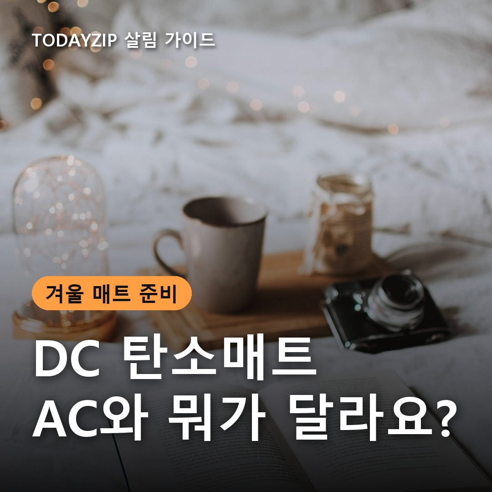
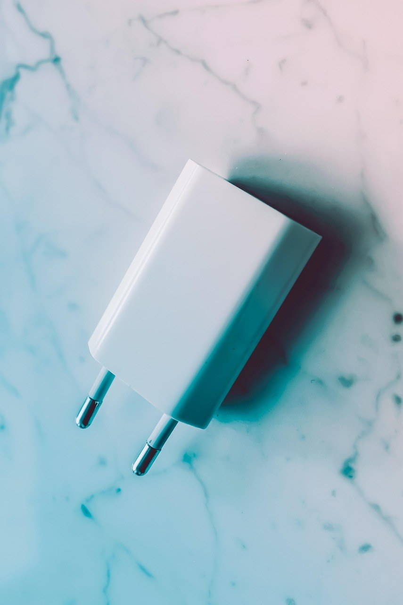
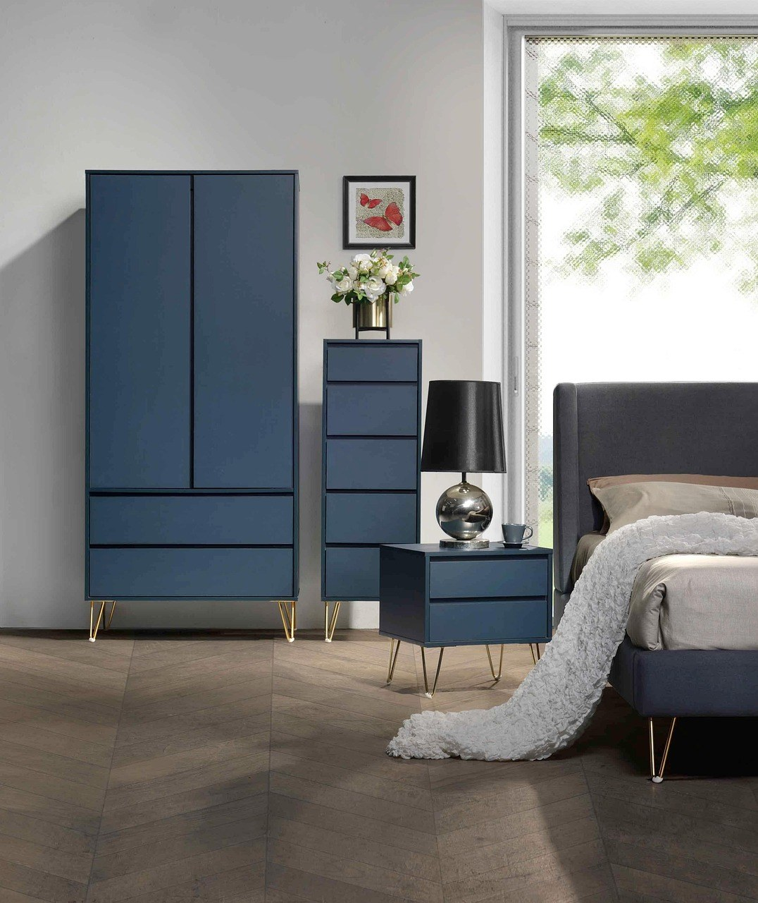
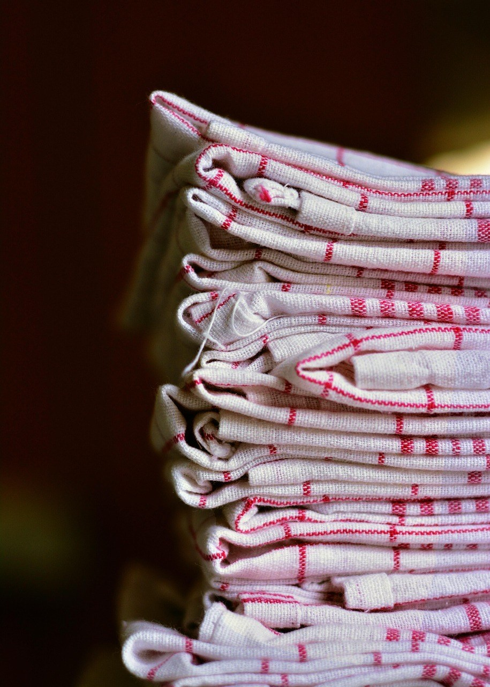

이 포스팅은 쿠팡 파트너스 활동의 일환으로, 이에 따른 일정액의 수수료를 제공받습니다.
[사진 1: 썸네일]
탄소매트를 검색하다 보면 같은 싱글 사이즈인데 가격이 몇 배씩 차이 나서 당황하게 돼요. 상세페이지마다 DC, 무자계, EMF 같은 말이 나오는데 무엇이 다른지 한 번에 알기 어렵고요.
두 제품의 가장 큰 차이는 전기를 쓰는 방식이에요. 오늘은 DC 탄소매트와 AC 전기매트의 전자파 표시, 예열 속도, 가격을 비교해 고르는 기준을 정리해 드릴게요.
[사진 2]
AC 전기매트는 콘센트의 교류 전기를 그대로 쓰는 방식이에요. DC 제품은 어댑터가 교류를 직류로 바꿔 매트에 보내요. 그래서 DC 탄소매트에는 보통 어댑터 겸 컨트롤러가 함께 있어요.
'탄소'와 'DC'는 서로 다른 말이에요. 탄소는 열을 내는 소재이고, DC는 전기 방식이에요. 탄소매트라고 해서 모두 DC는 아니니 전원 방식을 따로 확인하세요.
아래는 비교 자료에서 공통으로 보이는 일반적인 경향이고, 제품마다 차이가 있어요.
| 구분 | DC 탄소매트 | AC 전기매트 |
|---|---|---|
| 전원 | 어댑터로 직류 변환 | 교류 그대로 사용 |
| 전자파 | 적은 편, 어댑터 확인 | 제품별 차이, 인증 확인 |
| 예열 | 느린 편(10~15분 안팎) | 빠른 편(5~10분 안팎) |
| 최고 온도 | 낮은 편 | 높은 편 |
| 가격 | 비싼 편 | 저렴한 편 |
[사진 3]
전자파가 적다는 말보다 근거를 보세요. 'EMF 0'처럼 자체 측정한 표기는 공인 인증과 다를 수 있으니 공인 시험기관 성적서가 있는지 확인하세요.
DC 제품은 어댑터에서 전자파가 생길 수 있다는 점도 알아 두세요. 어댑터는 머리맡이 아니라 몸에서 떨어진 자리에 두면 좋아요.
[사진 4]
📷 [직접 찍은 사진 넣기: 침대 매트리스 폭을 줄자로 재는 모습]
아이 방이나 오래 켜 두는 잠자리라면 DC 탄소매트를 먼저 볼 수 있어요. 예열이 느린 편이니 자기 전에 미리 켜 두세요. 빨리 따뜻해져야 하거나 예산이 적다면 AC 제품도 괜찮아요.
전기요금은 방식보다 소비전력과 사용 시간을 보고 판단하세요. 100W 제품을 하루 8시간 쓰면 한 달에 약 24kWh예요. DC라고 요금이 줄어든다고 단정할 근거는 찾지 못했어요. 사이즈는 가장자리가 접히지 않게 매트리스 폭에 맞추세요.
✍️ [내 경험 한두 줄: 겨울밤 우리 집에서 가장 추운 잠자리는 어디인가요? (침대/바닥/아이 방)]
[사진 5]
본체는 물세탁이 안 되고 커버만 분리해 빠는 제품이 많아요. 세탁 조건은 설명서대로 따르세요.
장기간 접어서 보관하면 내부 발열체가 꺾일 수 있어요. 설명서에 맞게 둥글게 말아 보관하고, 다시 꺼내면 먼저 이상이 없는지 살펴보세요.
Q. DC 탄소매트면 전자파가 전혀 없나요?
A. 그렇게 단정할 수는 없어요. 매트 쪽은 적은 편이어도 어댑터 쪽에서 전자파가 생길 수 있으니 시험 성적을 확인하고 어댑터를 몸에서 떨어뜨려 두세요.
Q. DC 제품이 AC보다 덜 따뜻한가요?
A. 최고 온도가 낮고 예열이 느린 편이라는 비교가 많아요. 높은 온도를 원하면 제품의 최고 온도를 확인하세요.
정리하면, 오래 켜 두는 잠자리와 전자파 근거를 중시하면 DC 탄소매트, 빠른 예열과 가격을 중시하면 AC 전기매트를 보면 돼요.
여러분 집은 침대와 바닥 중 어디에서 주무시나요? 겨울 잠자리 준비 팁이 있다면 댓글로 나눠 주세요.
인스타그램 @todayzip.info 에서 살림 꿀팁을 30초 영상으로도 볼 수 있어요.
이 포스팅은 쿠팡 파트너스 활동의 일환으로, 이에 따른 일정액의 수수료를 제공받습니다.